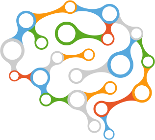

<mat-toolbar color="primary" style="height:100px">
  <span></span>
  <h1 class="title">EEG WAVE</h1>
  <span class="fill-space"></span>
  <app-user-profile></app-user-profile>
</mat-toolbar>

<section>
  <mat-card>
    <mat-card-header *ngIf="(auth.user | async) as user">
      <mat-card-title>Welcome {{ user.displayName }}</mat-card-title>
    </mat-card-header>
    <button
      *ngIf="!(connected || connecting)"
      mat-raised-button
      color="primary"
      (click)="connect()"
    >
      <mat-icon>bluetooth</mat-icon>
      Connect
    </button>
    <div *ngIf="connecting">
      Connecting...
      <mat-progress-bar mode="indeterminate"></mat-progress-bar>
    </div>
    <button
      *ngIf="connected"
      mat-raised-button
      color="primary"
      (click)="disconnect()"
    >
      <mat-icon>bluetooth_connected</mat-icon>
      Disconnect
    </button>
    <span [hidden]="!(batteryLevel | async)" class="battery-level-indicator">
      <mat-icon>battery_std</mat-icon
      >{{ batteryLevel | async | number: '1.0-0' }}%
    </span>
  </mat-card>
</section>
